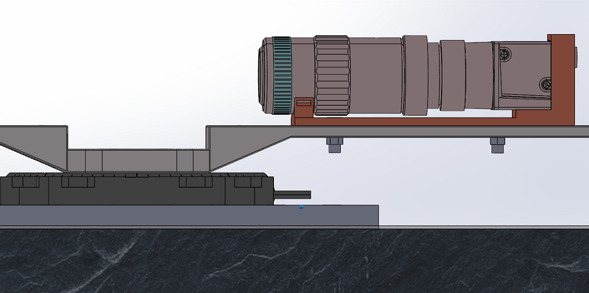

Project 1
Designing, Prototyping & Validating a Digital Motor Controlled 3D Scanner for Macroscopic Medical Application

MOTIVATIOIN:
To circumvent the difficulties encountered during the methods of eye estimation, tape and caliper, there is a need to
develop a prototype which can be combined with latest technologies to get 3D images in a less turnaround time. There
are available devices in the market which are difficult in turning camera at high speed and are slow in image processing
based on the target detection.
This study will deal with a design methodology which will help us to devlop a scanner to generate 3D models for medical research.
A device which can capture high resolution, reliable images and combine them together using the technique called Photogrammetry.
The primarily target area for this study would be for developing scanned models for medical applications e.g. Monoclonal cells
or manufacturing industries for macroscopic products.

Photogrammetry is referred to the science in which one makes measurements using photographs. This is the practice of
utilizing accelerated photography along with remote sensing for creating 3D models from two-dimensional photographs.
This is a unique application that’s garnered a high level of interest from several relevant industries, businesses, and
private individuals.
Following are a few of the benefits you can attain by applying photogrammetry for industrial use:
• A fully automatic process for image acquisition and report generation
• Automation of repetitive tasks with the use of macros
• Faster and more accurate decision making
Photogrammetry is one of the many fields of three-dimensional measurement associated with surveying. Photogrammetry
has been used for medical applications since midway through the nineteenth century and is now beginning to regain
its past popularity due to recent developments in real time instrumentation. Medical photogrammetry, now part of the
broader field known as biostereometrics, has had varying popularity over the past one hundred and fifty years due to
the many problems encountered during practical applications.
EQUIPMENT:

1. Optical Bench: To make a prototype, I used a sturdy base which could hold all the equipment at its place and would
provide robust support without generating the effects of floor vibrations. These unwanted noise and signals would affect
the quality of the images in this study. A TMC optical bench, an advanced building floor vibration isolation systems, was used. It has pneumatic air vibration
isolators which helps to reduce the floor vibration signal from our captured images. A customized granite table was
also installed to make a rigid support for the remaining devices.
2. Rotational Stage: Once we have the optical bench, we can mount the rotational stage with the help of a breadboard.
A rotational stage is a component which is used to rotate an object with a very precise angle.For this study, we used
physikinstrumente (PI) U-651 rotational stage with the low profile design. It has a unique feature to position
large loads with precision. The ultimate rotation range is more than 360 degree. The drive torque of this device is 0.3Nm
in both the directions of rotation.
3. Camera Unit: The next step in building a prototype would be to focus on the camera unit. The camera unit basically
consists of a camera attached to the objective lens. Both these units are connected with a connector.
For this study, a camera from Basler, ACE A2040, with 3.2 MP resolution was used with 120 frames per second. It has a CMOS sensor. This is a
very small, affordable and highly productive camera. This unit helps for the image processing applications. It is a mono
color camera. We need an additional device to connect this with a lens. We used an adapter which can hold an objective lens.
4. Objective Lens: The objective lenses are the optical elements closest to the specimen. It gathers light from the specimen,
which is focused to produce the real image. Mitutoyo’s objectives, 20x infinity corrected lens, makes the objectives larger
and longer (95mm parfocalization length). In order to maintain as high an N.A. and contrast as possible, the lenses are all
Plano Apochromats. The magnification is 20x and the focal length is 10mm. The resolving power for this lens is 0.7 micron
with a focus depth of 1.6 micron.
5. 3D Printed Parts: Once we have gathered all the equipment, we can build some components using 3D printing technology.
The purpose of choosing 3D printing is the ease of manufacturability. We can get printed parts in a less turnaround time.
We will see in the later section about how we can use 3D printing to get parts for this scanner prototype.
RESULTS:
Design Proposal 1: There were several challenges encountered during the installation of this part. First, due to the thermal deformation
during the 3D printing process, the arm got bent developing a curvature effect throughout its axis. Due to this,
the arm was not straight during the installation on to the mechanical stage. Secondly, on mounting the camera unit on
to this arm, large downward forces were encountered due to the mass of the camera unit. As a result, it was generating a
torque which would damage the sensitive mechanical stage and would affect its precise movement.
This problem was encountered due to the improper design considerations. A support structure below the camera unit
could have avoided the effect of bending. Or a counter mass in the direction opposite to the camera unit would have
circumvented this problem. After some trials, a change in the mechanical stage was observed which was not desired for
a precise machine.
Design Proposal 2: In the previous design, we observed that a few things were missing which would have helped us to get a desired output.
So, for the next design iteration, we incorporated a caster ball mechanism with a spring to support the mass of the
camera unit and a slider for the camera unit to adjust the working distance while capturing images. A spring in the
caster ball will help to move the arm in a rough surface. The spring will take all the forces generated by the bumps
in its way.
After getting a design idea, an attempt was made to make a complete assembly in the SolidWorks. The slider mechanism
was good for adjusting the optical unit. But due to the caster ball installation, it increased the height of the overall
arm. As the arm height increases, it will generate some additional force during the rotation at high speed. Additionally,
we would also need longer bolts to fix this arm on to the mechanical stage. It was also noticed that the camera and lens
mounting was not considered properly. There are chances that the whole camera unit may fall during the rotation or some
minor impact. Due to all these factors, this design didn’t meet the requirements too. There was a need to design something
different to tackle all these challenges.
Design Proposal 3: A third type of design was proposed which would help us to get a desired prototype. It has to be
practical at the same time. The motivation behind this iteration was to reduce the overall height of the arm, to make
a bigger holder for caster ball which can encase the whole caster ball and clamps to fit a camera on its place.
A new arm was designed which was much lighter than the previous arm. The section which is used to mount the arm on the mechanical
stage was lowered as compared to the other parts of the arm. A slot at the center of the arm was also given so that the
slider can be fitted in that slot. For this arm, a new printer was used to print the part. This printer was EOS P110. It
is a polymer printer which uses Nylon 12 powder particles to print the parts by sintering it with laser. The weight of
the previous design without the slider mechanism was around 80 grams. A large amount of efforts was made to reduce the
weight too. The new arm weighs only 76 kg including all the slider and the caster ball mounting. The thickness was reduced
as compared to the previous design. The CAD models are attached below:

Several changes were made in the camera slider mechanism. A special casing was provided so that the camera can sit
in the provided section. The slider was mounted on the arm with the help of nuts and bolts. A wider caster ball
mounting was made so that the mounting can encase the whole caster ball head in it. This will restrict the movement
of the caster ball in just one direction.
Some analysis was also performed to validate the design. ANSYS Workbench was used to calculate the total deformation
when the optical unit is placed on to the arm with the help of the slider.
To do the analysis, the CAD model was imported to ANSYS software and then the material properties were selected. Fine meshing
was also done for a detailed force analysis. Meshing is defined as the process of dividing the whole component into a
number of elements so that whenever the load is applied on the component it distributes the load uniformly called as meshing.
The base of the arm was fixed and the force of 50 N was applied on to the slider. The optical unit weighs only 700 kg including
the camera, holder and the optical lens. A downward force of 50N is more than sufficient for this study. On calculating
the total deformation, it was found that it will deform by 0.05 mm only when the optical unit will be placed on it.
The important thing to note here is that this deformation is without the caster ball assembly. All the bending forces
will be handled by the upward force from spring.
So at this point, we can say that our designed arm is good for the 3D scanner prototype. The only thing that needs
some improvement is to fix the optical lens with the slider. As per the current design, we intend to use Velcro belt
to attach the optical lens with the slider. But this is not a sturdy support for such a heavy equipment. To fix this
problem, we can make a clamp which will hold the lens with the help of nuts and bolts. EOS P110 was used to 3D print
the clamp and was attached to the slider. With this, we finish our arm design for the 3D scanner prototype. We can
put an acrylic sheet on to the granite table to make a super smooth surface.
CONCLUSION:
After three iterations, we were able to get a good design for our 3D scanner prototype. Several parts were 3D printed to mount
all the equipment together on an optical bench. Some trials were taken at different speeds using PI controller to see how intact
the prototype is. The results were quite satisfactory. Slider mechanism works amazingly well to change the working distance
of the optical unit. Some trials were taken to check the effects of the spring on an uneven surface. The caster ball supports
the heavy optical unit very well without bending the arm.

Later, a lighting device was also installed. Work for capturing the images is still in progress. Please stay tuned for some sample images taken by this setup.